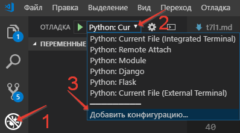
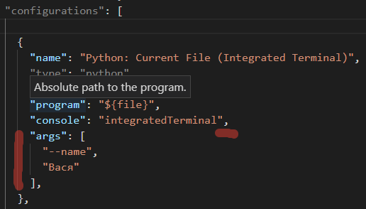

Лекция 2. Параметры командной строки¶
До этого мы получали параметры в интерактивном режиме через input() — это удобно для обучения, но в реальных программах параметры обычно берут либо из файла настроек, либо из командной строки.
- Файлы настроек (
.ini,.toml,.yaml, переменные окружения) — для параметров, которые задаются один раз и не меняются между запусками. - Командная строка — для параметров, которые меняются от запуска к запуску (имена входных файлов, режимы работы, флаги).
В этой лекции — как разбирать аргументы командной строки в Python (sys.argv → argparse) и в Go (flag → сторонние библиотеки вроде spf13/cobra).
Простейший доступ: sys.argv¶
В Python список параметров, переданных программе, лежит в sys.argv. Нулевой элемент — имя самого скрипта, дальше — аргументы.
Запуск:
В Go аналог — пакет os:
os.Args[0] — тоже имя бинарника, остальные элементы — аргументы.
Минимальный «Hello, world» с аргументом¶
Заказчик попросил: «Если запустили без параметра — Привет, мир!, если с именем — Привет, <имя>!».
Пока всё просто. Но как только заказчик попросит именованные параметры (--name Вася), проверки на количество и порядок, значения по умолчанию, — код превращается в «вермишель» из if. Эту работу не нужно писать руками: в обоих языках есть готовые библиотеки.
Python: argparse¶
Стандартный модуль argparse делает разбор командной строки декларативным.
Базовый рецепт:
- Создать экземпляр
ArgumentParser. - Описать каждый ожидаемый параметр через
add_argument. - Вызвать
parse_args— получить пространство имён с разобранными значениями.
import argparse
def create_parser() -> argparse.ArgumentParser:
parser = argparse.ArgumentParser()
parser.add_argument("name", nargs="?", default="мир")
return parser
if __name__ == "__main__":
args = create_parser().parse_args()
print(f"Привет, {args.name}!")
nargs="?" делает позиционный параметр необязательным, default="мир" — значение по умолчанию.
Именованные параметры¶
Теперь запуск выглядит так:
-n — короткое имя, --name — длинное (используется как имя поля в Namespace).
Значения как списки¶
nargs="+" — одно или больше значений (как + в регулярных выражениях). * — ноль или больше, ? — ноль или одно, целое число — ровно столько.
Выбор из вариантов и типы¶
parser.add_argument("--format", choices=["gif", "png", "jpg"], default="png")
parser.add_argument("-c", "--count", type=int, default=1)
parser.add_argument("--config", type=argparse.FileType("r"))
choices— допустимые значения; всё остальное — ошибка.type— функция-конвертер (int,float, кастомная).argparse.FileType("r")— безопасно открыть файл и аккуратно сообщить об ошибке.
Флаги¶
parser.add_argument("-v", "--verbose", action="store_true")
parser.add_argument("--no-cache", action="store_false")
store_true / store_false — параметр работает как флаг, при указании принимает соответствующее булево значение.
Обязательные именованные¶
По умолчанию именованные параметры необязательные. Чтобы сделать обязательным:
Подпарсеры: команды¶
Если у программы есть несколько режимов (как у git — add, commit, push), используют subparsers.
import argparse
def create_parser() -> argparse.ArgumentParser:
parser = argparse.ArgumentParser(prog="hello")
subparsers = parser.add_subparsers(dest="command", required=True)
hello = subparsers.add_parser("hello", help="Поприветствовать")
hello.add_argument("--names", "-n", nargs="+", default=["мир"])
bye = subparsers.add_parser("goodbye", help="Попрощаться")
bye.add_argument("-c", "--count", type=int, default=1)
return parser
def run_hello(args: argparse.Namespace) -> None:
for name in args.names:
print(f"Привет, {name}!")
def run_goodbye(args: argparse.Namespace) -> None:
for _ in range(args.count):
print("Прощай, мир!")
if __name__ == "__main__":
args = create_parser().parse_args()
{"hello": run_hello, "goodbye": run_goodbye}[args.command](args)
Запуск:
Оформление справки¶
argparse автоматически генерирует справку по -h / --help. Чтобы она читалась хорошо:
parser = argparse.ArgumentParser(
prog="hello",
description="Учебная программа: приветствует и прощается.",
epilog="(c) Курс ОАиП",
)
parser.add_argument(
"--names", "-n",
nargs="+",
default=["мир"],
help="Список приветствуемых людей",
metavar="ИМЯ",
)
description— что делает программа.epilog— текст после списка параметров.help— описание параметра.metavar— как выводится имя значения параметра (--names ИМЯ, а не--names NAMES).
Современные альтернативы argparse¶
click— декларативный API через декораторы, удобен для CLI среднего размера.typer— поверхclick, использует аннотации типов Python; де-факто стандарт для FastAPI-стиля.rich-click— обёртка надclickс красивой подсветкой и таблицами.
Пример на typer:
import typer
app = typer.Typer()
@app.command()
def hello(name: str = "мир", count: int = 1) -> None:
"""Поприветствовать."""
for _ in range(count):
typer.echo(f"Привет, {name}!")
if __name__ == "__main__":
app()
Go: пакет flag¶
В стандартной библиотеке Go разбор флагов делает пакет flag. Он проще argparse, но покрывает большинство случаев.
package main
import (
"flag"
"fmt"
)
func main() {
name := flag.String("name", "мир", "имя для приветствия")
count := flag.Int("count", 1, "сколько раз поприветствовать")
verbose := flag.Bool("verbose", false, "подробный вывод")
flag.Parse()
for i := 0; i < *count; i++ {
if *verbose {
fmt.Printf("[%d] ", i+1)
}
fmt.Printf("Привет, %s!\n", *name)
}
}
Запуск:
flag.String/Int/Bool возвращают указатели, поэтому в коде значения читаются через разыменование (*name). Если разыменование не нравится, есть варианты flag.StringVar(&name, …).
После flag.Parse() оставшиеся позиционные аргументы доступны через flag.Args().
Подпарсеры в Go: flag.NewFlagSet¶
flag сам по себе не умеет команды — для каждой команды заводят отдельный FlagSet:
package main
import (
"flag"
"fmt"
"os"
)
func main() {
if len(os.Args) < 2 {
fmt.Println("usage: app <command> [flags]")
os.Exit(1)
}
helloCmd := flag.NewFlagSet("hello", flag.ExitOnError)
helloName := helloCmd.String("name", "мир", "кого приветствовать")
byeCmd := flag.NewFlagSet("goodbye", flag.ExitOnError)
byeCount := byeCmd.Int("count", 1, "сколько раз")
switch os.Args[1] {
case "hello":
_ = helloCmd.Parse(os.Args[2:])
fmt.Printf("Привет, %s!\n", *helloName)
case "goodbye":
_ = byeCmd.Parse(os.Args[2:])
for i := 0; i < *byeCount; i++ {
fmt.Println("Прощай, мир!")
}
default:
fmt.Println("неизвестная команда")
os.Exit(1)
}
}
Сторонние библиотеки для CLI на Go¶
Для нетривиальных CLI стандартный flag тесноват — на практике берут одну из:
| Библиотека | Особенности |
|---|---|
spf13/cobra |
Самая популярная. Команды, подкоманды, авто-help, авто-completion. Используется в kubectl, docker, gh. |
spf13/pflag |
POSIX-совместимые флаги (длинные --name, короткие -n). Часто идёт в паре с cobra. |
urfave/cli |
Альтернатива cobra, чуть проще API. |
alecthomas/kong |
Декларативный CLI через теги в структурах. |
Простой пример на cobra:
package main
import (
"fmt"
"os"
"github.com/spf13/cobra"
)
func main() {
var name string
var count int
rootCmd := &cobra.Command{Use: "app"}
hello := &cobra.Command{
Use: "hello",
Short: "Поприветствовать",
Run: func(cmd *cobra.Command, args []string) {
for i := 0; i < count; i++ {
fmt.Printf("Привет, %s!\n", name)
}
},
}
hello.Flags().StringVarP(&name, "name", "n", "мир", "кого приветствовать")
hello.Flags().IntVarP(&count, "count", "c", 1, "сколько раз")
rootCmd.AddCommand(hello)
if err := rootCmd.Execute(); err != nil {
os.Exit(1)
}
}
Сравнение Python ↔ Go¶
| Аспект | Python (argparse) |
Go (flag) |
Go (cobra) |
|---|---|---|---|
| Часть стандартной библиотеки | да | да | нет |
| Длинные/короткие имена | -n, --name |
-name (один префикс) |
-n, --name |
| Значения по умолчанию | default=… |
в сигнатуре flag.String(...) |
в StringVarP(...) |
| Типы | type=int, FileType |
отдельные функции (Int, Bool, ...) |
через теги/функции |
| Подкоманды | add_subparsers |
flag.NewFlagSet вручную |
AddCommand |
| Автогенерация help | да | базовая | развитая, с completion |
| Аналог в экосистеме | click, typer |
— | urfave/cli, kong |
Параметры командной строки в отладчике VS Code¶
Если в IDE вы запускаете скрипт через F5 и хотите передать ему параметры:
- Перейдите в режим Run and Debug (Запуск и отладка) на боковой панели.
- Откройте выпадающий список конфигураций отладчика.
-
Выберите Add Configuration… (Добавить конфигурацию).

-
В
launch.jsonдля конфигурацииPython: Current Fileдобавьте полеargs— массив строк, каждая строка отдельным элементом:
{
"name": "Python: Current File",
"type": "debugpy",
"request": "launch",
"program": "${file}",
"console": "integratedTerminal",
"args": ["--name", "Вася", "--count", "3"]
}
Для Go в конфигурации launch.json параметры тоже задаются полем args:
{
"name": "Launch package",
"type": "go",
"request": "launch",
"mode": "auto",
"program": "${workspaceFolder}",
"args": ["hello", "-n", "Вася"]
}
Контрольные вопросы¶
- Что такое позиционный параметр и чем он отличается от именованного?
- В чём смысл
nargs="?",nargs="+",nargs="*"? - Какие действия
actionуadd_argumentвы знаете и зачем нуженstore_true? - Когда стоит выбрать
argparse, а когда —click/typer? - Почему в Go флаги возвращают указатель и как этого избежать?
- В каких случаях стандартного
flagнедостаточно и почему в реальных проектах берутcobra? - Как передать аргументы командной строки скрипту, запускаемому через отладчик VS Code?